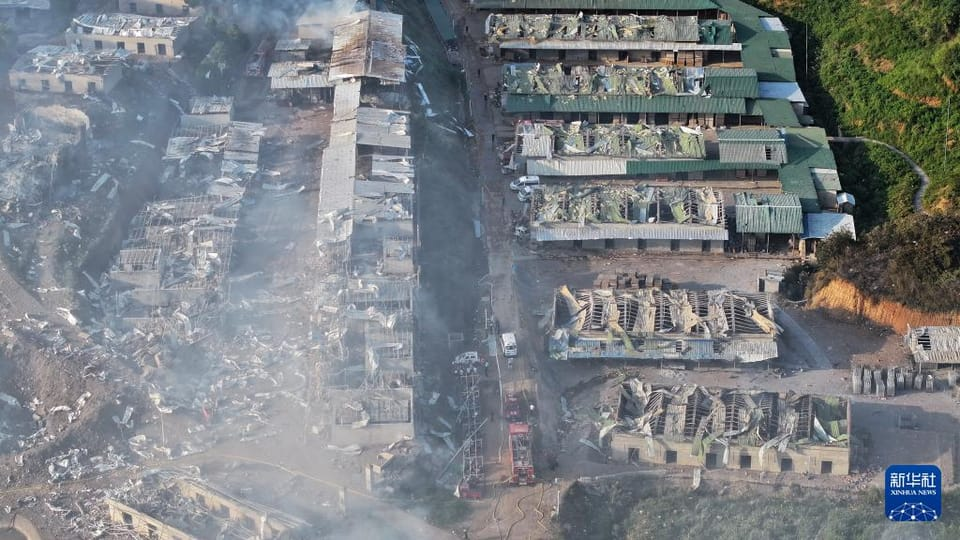

世界苦茶06月18日新闻 | 46条 | 美国考虑直接攻击伊朗

美国考虑直接攻击伊朗 | 美以战略目标快速转向伊朗政权更迭 | 中国与中亚国家开展合作 | 特朗普再拖延TikTok不卖就禁时间 | 欧盟拒绝中欧经济会谈
每天三件事：
苦茶数据
美元兑人民币：7.18（昨日7.18，前日7.18）
美元兑日元：145.07（昨日145.00，前日144.23）
上证指数：3380（昨日3387，前日3388）
标普500指数：5982（昨日6033，前日5976）
比特币：105063（昨日106860，前日106656）
布伦特原油：76.76（昨日72.91，前日74.95）
以伊战争
• 数万游客滞留以色列避空袭 ：以色列与伊朗爆发冲突后，有成千上万的游客滞留以色列，他们和当地人一样被空袭警报惊醒，赶到防空设施避难，原本美好的度假计划因此泡汤。以色列上周五袭击伊朗，并关闭全国领空，航空公司纷纷取消往返以色列的航班。根据以色列旅游部的数据，约有四万名游客滞留当地。他们如今得决定是要等待航班复飞，或是支付高昂费用，从邻近国家绕道回家。和家人一起到耶路撒冷度假的美国游客乔伊纳说，他们虽然预计此次行程可能会因以色列与哈马斯的冲突而受到一些干扰，但没有料到会发生一场新的战争。他星期天告诉路透社：“我们没有想到以色列会袭击伊朗。这是完全不同程度的升级。”
• 马克龙反对军事打击伊朗 ：正在加拿大出席七国集团峰会的法国总统马克龙说，他反对采取可能导致伊朗政权更迭的军事行动，因为这会导致伊朗及中东地区陷入混乱。新华社报道，马克龙星期二对媒体说，“我们不希望伊朗拥有核武器”“但最大的错误是用军事打击来更换政权，因为这会造成混乱”。他表示坚决反对空袭伊朗能源基础设施、平民，以及可能导致政权更迭的军事行动，同时强调应尽快恢复谈判。鉴于中东紧张局势，美国总统特朗普星期一提前一天离开七国集团峰会。七国集团当晚发表一份声明，称以色列有权“自卫”，同时施压伊朗，强调“伊朗永远不能拥有核武器”。声明呼吁化解以伊冲突，以促使中东地区敌对活动降级，包括实现加沙地带停火。
• 特朗普召集会商伊朗局势 ：美国总统特朗普提前离开七国集团峰会后，召集国家安全团队开会，并呼吁伊朗“无条件投降”， 警告称美国的耐心正在耗尽。综合路透社和彭博社报道，知情人士透露，特朗普于星期二下午召集国家安全团队开会，讨论以色列与伊朗的军事冲突。特朗普星期一晚上离开在加拿大阿尔伯塔省卡纳纳斯基斯举行的七国集团领导人峰会。特朗普与国安团队在白宫战情室讨论了一个多小时，白宫会后没有立即发表声明。多家美国媒体报道，特朗普正考虑一系列选项，包括加入以色列对伊朗的空袭。
• 特朗普警告美国的耐心正在消耗殆尽，敦促伊朗"无条件投降" ：以色列和伊朗的空战已经进入到第五天。美国总统特朗普周二敦促伊朗"无条件投降"，并称已知道伊朗领导人哈梅内伊的下落，但"我们不会干掉他，至少现在不会...我们的耐心正在消耗殆尽。"美国官员告诉路透，美国正在向中东部署更多战斗机，并延长其他战机的部署时间。美国国防部长黑格塞斯称之为防御性部署。据熟悉哈梅内伊决策过程的五位人士称，哈梅内伊的主要军事和安全顾问已在以色列的打击中丧生，这使他的核心圈子出现重大漏洞，并增加了战略失误的风险。法尔斯通讯社报导，由于伊朗领导人遭遇1979年以来最危险的安全漏洞，该国网络安全指挥部禁止官员使用通讯设备和手机。
• 因冲突加剧伊朗已几乎切断全国互联网： 两家追踪全球互联网连接的公司Kentinc和Netblocks报告，伊朗的互联网连接在当地时间周二下午5:30左右骤降，限制了伊朗人获取和与外界共享信息的能力。Cloudflare周二发布的数据显示，伊朗两家主要的移动网络提供商实际上已断网。上周，以色列袭击伊朗后，该国的互联网访问量有所下降，但并未完全中断。网络中断似乎是伊朗政府的决定，而非以色列对伊朗基础设施的打击。伊朗政府发言人穆哈杰拉尼表示，政府已限制互联网访问，以回应以色列的网络攻击。伊朗政府历来在国内动乱时期关闭或减少与外界的互联网连接，但伊朗民众基本上仍然可以访问伊朗国家信息网络，这是一个由政府批准的、未与外界联网的站点组成的全国性网络。
• 哈梅内伊据传因精神崩溃被排除在关键决策之外： 据报道，由于精神健康状况严重恶化，伊朗最高领袖阿里·哈梅内伊已被现存的高级军事指挥官排除在最重要的战略决策之外。反对派媒体“伊朗国际”披露，这位86岁的老阿亚图拉在与以色列军事冲突升级后可能遭遇了精神崩溃，从那时起就被排除在最敏感的国家安全讨论之外。消息人士指出，自多名哈梅内伊最信任的亲信在以色列对伊朗革命卫队目标的空袭中被刺杀之后，他的精神状况开始明显下滑。
• 消息人士称，特朗普越来越倾向于对伊朗发动军事打击： 两位知情官员向CNN透露，美国总统唐纳德·特朗普越来越倾向于动用美军力量打击伊朗核设施，并逐渐放弃通过外交手段解决德黑兰与以色列间不断升级的冲突。这种更加鹰派的态度代表了特朗普思维方式的重大转变。尽管如此，消息人士称，特朗普仍愿意接受外交解决方案——前提是伊朗做出重大让步。上周末及周一，特朗普政府官员之间仍在就寻求外交“下坡路”进行讨论。但在周二早些时候，特朗普在从加拿大G7峰会返程的“空军一号”上对记者表示，他对与伊朗谈判的耐心正在耗尽。“我现在不太想和伊朗谈，”他说，并补充道，他对伊朗的目标是“一个终结，一个真正的终结，而不是停火，也不是半途而废的放弃。”
• 中国派出神秘运输机飞往伊朗： 在上周五以色列袭击伊朗后的第二天，一架货运飞机从中国起飞。次日，又有一架飞机从中国某沿海城市出发。到了周一，第三架飞机从上海起飞——三天内三架航班。数据显示，每架飞机都沿中国北部向西飞行，穿越哈萨克斯坦，然后向南进入乌兹别克斯坦和土库曼斯坦——在接近伊朗时信号从雷达上消失。更为神秘的是，这些航班的飞行计划标示目的地为卢森堡，但飞机似乎从未飞入过欧洲领空。
• 伊朗流亡王储呼吁起义推翻“崩溃中的政权”： 伊朗前国王的流亡之子礼萨·巴列维周二通过社交媒体发表“致伊朗全国的讲话”，呼吁国家安全部队和公职人员起来反抗伊斯兰政权，称该政权“已经开始瓦解”。“我的同胞们，伊斯兰共和国已经走到尽头，正在崩溃之中，”巴列维用波斯语说。他称最高领袖阿里·哈梅内伊“就像一只受惊的老鼠，已经躲入地下，失去了控制。”他表示，“伊斯兰共和国的终结，就是自1979年以来对伊朗民族发动的这场长达46年的战争的终结。”“现在只需要一场全国性的起义，就能彻底终结这个噩梦，”他继续说道，“现在正是起来夺回伊朗的时候。”
中国新闻
• 习近平承诺援助中亚15亿 ：中国国家主席习近平星期二在中国－中亚峰会上强调，中国愿同各方携手捍卫国际公平正义，反对霸权主义和强权政治，并宣布中国愿在今年向中亚国家提供15亿元人民币无偿援助，用于实施各国关注的民生和发展项目。据中国央视新闻报道，习近平在峰会做主旨发言，强调关税战、贸易战没有赢家，单边主义、保护主义、霸权主义注定伤人害己，并说：“我一贯主张，历史不能倒退，应当向前；世界不能分裂，应当团结；人类不能回到丛林法则，应当构建人类命运共同体。”习近平说，中国始终视中亚为周边外交优先方向，坚持睦邻安邻富邻、亲诚惠容理念方针，同中亚国家平等相交、真诚相待，永远亲望亲好、邻望邻好。
• 习近平会晤吉总统谈合作 ：中国国家主席习近平当地时间星期二上午在哈萨克斯坦首都阿斯塔纳，会见吉尔吉斯斯坦总统扎帕罗夫。习近平表示，中吉两国都是经济全球化的受益者，要共同反对单边主义，坚定维护国际经贸秩序，推动构建更加公正合理的全球治理体系。据中国外交部发布的消息，习近平会上指出，中吉建交33年来两国关系实现跨越式发展，处于历史最好时期。今年2月中吉元首在北京举行富有成果的会晤，达成一系列重要共识，为两国合作注入新的强劲动力。扎帕罗夫今年2月4日至7日对中国进行四天国事访问，习近平2月5日在北京人民大会堂同扎帕罗夫举行会谈，会谈后签署两国深化新时代全面战略伙伴关系的联合声明。
• 习近平与土总统谈天然气 ：中国国家主席习近平当地时间星期二上午在哈萨克斯坦首都阿斯塔纳，会见土库曼斯坦总统别尔德穆哈梅多夫。习近平会上呼吁中土两国扩大两国天然气合作规模，拓展非资源领域合作，优化贸易结构，提升地区互联互通水平。土库曼斯坦是世界四大天然气产国之一，80％的国土下蕴藏丰富的天然气，中国的天然气有接近一半由土库曼斯坦供应。谢尔达尔·别尔德穆哈梅多夫2022年3月，从父亲库尔班古力·别尔德穆哈梅多夫手中接棒，成为现任土库曼斯坦总统。他2023年1月首次对中国展开国事访问，与习近平在北京人民大会堂举行会见，宣布两国关系提升为全面战略伙伴关系。
• 哈总统盼与中加强核能合作 ：哈萨克斯坦总统托卡耶夫称，希望加强与中国的核能合作，推进建设哈国核电站。据哈萨克国际通讯社报道，托卡耶夫在星期一与中国国家主席习近平的会谈中说，中国核工业集团公司是哈萨克斯坦可靠的战略伙伴。托卡耶夫说，决定在哈萨克斯坦建设至少两到三座核电站，正积极吸引大型企业参与。他特别提到了中核集团，表示该企业将在哈国市场占据重要地位，哈方将其视为可靠的战略伙伴。
• 离婚预约难催生代抢服务 ：中国离婚率近年不断攀升，离婚预约难催生抢号代办服务。路透社报道称，多位中国网友在社交媒体上反映，民政部门官网的离婚登记预约一号难求，有的甚至数月无法成功预约。有人嗅到商机，从事起付费“代抢号”业务。据报道，一位女性医疗从业者从今年3月起兼职代抢离婚号，每单收取400元人民币服务费。据她说，必须在放号前登录系统，精准掐点提交申请，否则预约名额往往几秒内即被抢空。自从开展该服务以来，她已通过这一副业赚取了约5000元，接近其本职工作月薪的一半。
• 李家超再谈黑暴破坏香港 ：香港特首李家超表示，2019年经历“港版顔色革命”“黑暴”后，香港整体被肆意破坏，市民被任意殴打侮辱，交通还随时因道路被堵而阻塞，政府施政被瘫痪，每个情景都令人很伤痛、历历在目。据香港电台报道，李家超出席行政会议前表示，《香港国安法》公布实施立竿见影、止暴制乱，香港再次恢复稳定、安全、有秩序，每个市民可以正常生活，经济可以发展，为香港各方面注入稳定安全的好处。李家超指出，经过警方与其他执法部门努力，香港的安全获得保障，最近一些世界级报告还将香港列为世界第六安全城市。
• 网文新增注册创作创新高 ：中国作家协会公布2024网络文学行业数据，反映出网络文学正成为中国最具活力的文化产业之一。据央视网报道，中国作协星期二发布的《中国网络文学蓝皮书（2024）》指出，网络文学成为最具全民性特征的文学样式，用户规模达5.75亿，读者年龄、职业覆盖更广。《蓝皮书》显示，中国网络文学年度新增作品200万部，中短篇创作强势崛起，网文生态更加丰富。创作者方面，“Z世代”成为新增注册、签约作者主体，2024年度新增注册280万人、新增签约35万人。 （翻评：我不相信现在有创作者不用AI进行写作，但AI网文确实很不好读。）
亚太印太新闻
• 泰旅游业盼中国游客复苏 ：泰国仍未完全摆脱游客安全问题带来的负面影响，中国游客数量大幅下滑，许多专注于中国市场的旅行社进入“休眠”，期盼明年可能迎来市场复苏。泰国《民族报》星期一报道，泰国旅行社协会估计，今年中国赴泰游客可能仅有500万人次，其中大部分为商务目的而非休闲旅游，真正的团体游客可能只有100万人次左右，只占到访人数的20%。马来西亚则取代中国，成为泰国自2012年以来最大的客源国。1月1日至6月8日的统计数据显示，到访泰国的马国游客达到创纪录的204万1002人次，比中国游客多出1万多人。
• 印尼火山喷发警戒升最高 ：印度尼西亚东努沙登加拉省的勒沃托比·拉基拉基火山星期二猛烈喷发，火山灰柱高达11公里，引发当局高度关注。路透社报道，印尼火山与地质灾害应对局已将这座火山的警戒级别提升至最高级，并警告若未来出现强降雨，可能引发熔岩流。此次喷发是勒沃托比近三个月内的第三次大规模火山活动。今年5月的喷发也曾促使当局上调警戒等级，而3月的爆发则一度导致澳洲捷星航空与澳洲航空取消或延误多个飞往峇厘岛的航班。
• 赖清德推动国防改革 ：台湾总统赖清德说，政府将持续推动国防改革，编列并争取更多国防预算，以强化整体防卫能力。综合台湾《联合报》《自由时报》报道，赖清德星期二前往陆军第58炮指部视察新式武器，并慰问官兵。赖清德强调，精实战力不仅取决于先进的装备，更来自每位官兵高昂的士气与坚定的信念。政府会持续推动国防改革，继续编列并争取更多国防预算，他呼吁朝野立委共同支持。他称，这些年政府不断提升军公教待遇，并在今年4月为台军加薪，未来也会持续努力改善官兵福利，推出更多“敬军政策”。
• 赖清德支持率回升不满增 ：最新民调显示，台湾总统赖清德的支持率回升至近五成，但不满意度也同步上升。台湾民意基金会星期二公布的最新民调显示，在赖清德处理政事的表现方面，包括重大人事安排与政策推动，16.7%的受访者表示非常赞同，32%还算赞同；相较之下，19.2%不太赞同，26.5%完全不赞同，另有3.4%表示没意见，2.3%则表示不知道或拒答。台湾民意基金会董事长游盈隆分析，与上个月相比，赖清德的声望上升了三个百分点，但不满意的比例也大增8.3个百分点，选择“没意见”的受访者则下降了8.5个百分点，显示民怨正前所未有地集结。
• 台湾潜舰“海鲲号”首试航 ：台湾媒体报道，台湾首艘自制潜舰“海鲲号”进行了首次海试。综合台湾《联合报》和ETtoday新闻云报道，“海鲲号”在泊港测试阶段稍有延宕，在经调整后完成最后一次泊港测试，并在星期二上午正式离港进行首次海上测试。据报道，“海鲲号”当天上午8时依靠本身动力航行，在多艘拖船戒护下，从台船码头一路开往高雄二港口出海口开展海试，舰上甲板有身穿深蓝色工作服、头戴工程安全帽的工作人员来回巡视。不少军事迷一早到现场争相拍照，台船工程人员和警方在岸边戒护。
• 韩日G7期间将举行会谈 ：韩国总统李在明将于星期二，在加拿大举行的七国集团峰会期间，与日本首相石破茂举行双边会谈。路透社报道，李在明于6月3日赢得韩国总统选举，并于近日宣誓就职。此次出访加拿大，是他就任以来的首次海外行程。在原定安排中，李在明也将与美国总统特朗普会面。但因特朗普提前离开峰会，两人的会晤“变得困难”。韩国家安全顾问说，华盛顿已就此情况请求韩方的谅解。
科技新闻
• TikTok美资产宽限再延 ：美国总统特朗普决定，把中国字节跳动剥离短视频应用TikTok美国资产的最后期限再延长90天。路透社报道，TikTok“不卖就禁”的宽限期原定在星期四结束，美国白宫星期二宣布，特朗普决定把期限多延长90天。白宫新闻秘书莱维特说：“特朗普总统本周将签署一项额外的行政命令，以维持TikTok的运营。” （翻评：Yes, Trump Always Chickens Out, TACO is accurate）
• 马斯克X公司起诉纽约州 ：埃隆·马斯克的 X公司起诉纽约州，称要求社交媒体公司披露其如何处理仇恨言论、极端主义和虚假信息的法律违反了美国宪法。X 周二向曼哈顿联邦法院提起诉讼，声称纽约州州长凯西·霍楚尔去年12月签署的 “停止隐藏仇恨法案”的条款违反了州和联邦的言论自由保障。该公司寻求一项命令，宣布这些条款无效，并阻止州政府执行这些条款。该法律将于本周生效，要求 X 和其他主要社交媒体公司提交报告，详细说明他们如何定义和缓和仇恨言论、种族主义、极端主义、激进主义、虚假信息和错误信息、骚扰和外国政治干预。诉讼将纽约州总检察长列为被告。
• 荷兰建议禁15岁用社媒 ：荷兰政府发布指导建议，呼吁家长禁止15岁以下儿童使用TikTok、Snapchat等社交媒体应用，成为继澳大利亚和新西兰之后，最新一个因应青少年心理健康问题而提出相关限制的国家。法新社报道，这项于星期二发布的建议虽不具强制力，但其立场鲜明。荷兰卫生、福利与体育部指出：“过度使用屏幕和社交媒体，可能对儿童的心理健康和发展造成不良影响。例如睡眠问题、恐慌发作、抑郁症状、注意力下降和负面的自我形象。”政府建议，小学尚未毕业的儿童不应拥有智能手机；进入中学阶段后，方可使用聊天类应用，但在满15岁前不宜接触社交媒体。 （翻评：非常支持，但现在有个困境是，不是小孩子主动要用社交网络，很多家长把社交网络当作控制和安抚小孩子的工具。）
• 人工智能将在未来几年缩减亚马逊员工规模： 当地时间周二，全球最大电商和云计算平台亚马逊的CEO安迪·贾西公开撰文，谈论了他对生成式AI的一些思考。贾西表示，随着公司推出更多生成式AI和智能代理，工作方式也将随之改变。某些现有岗位所需的人力将会减少，而更多人会从事其他类型工作。他强调：“虽然难以精确预期长期净影响，但在未来几年，随着全公司广泛运用人工智能提升效率，我们预计企业整体的员工规模将会缩减。”贾西给员工们的建议是对AI保持好奇心，主动学习相关知识，尽可能多地使用和尝试AI技术。 （翻评：之前很多人觉得卢德主义特别愚昧，最近可能会有不同的想法。）
财经新闻
• 胡润发布外企制造30强 ：胡润研究院首次发布《2025胡润制造业外企在华投资30强》榜单，其中汽车制造业上榜企业数量占四成。根据胡润研究院星期一在官网发布的新闻稿，上述榜单列出了制造业领域最具代表性的30家外资企业，依据这些企业最新财年在中国大陆的销售额和员工规模两大指标进行综合评估。这是胡润研究院首次发布此榜单。胡润集团董事长兼首席调研官胡润说，很多跨国企业的全球化战略中，将中国定位为‘必赢战场’。例如，丰田汽车今年4月与上海签署了战略合作协议，总投资146亿元人民币将在上海设立独资工厂，生产雷克萨斯纯电动汽车。德国化工巨头巴斯夫投资100亿欧元建设湛江一体化基地，计划2030年完工，这是历年来中国最大的外资投资项目之一。这些举措正是以行动诠释了跨国企业对中国市场的深度看好。
• IEA表示，中国石油需求将达峰 ：国际能源署预测，中国的石油需求将在2027年提前达峰，全球石油需求则将继续增长。综合彭博社和路透社报道，国际能源署6月4日发布的年度报告指出，尽管全球最大原油进口国中国的石油需求预计将在2027年达到峰值，但在美国汽油价格相对低廉、电动车普及速度放缓等因素带动下，全球石油需求将持续增长至2030年。报道称，全球石油需求将在2030年前见顶的预测与IEA此前判断相同。据预测，全球石油日需求量将于2029年达到1亿零560万桶，2030年开始略微下降。
• 欧盟拒中欧经济会谈 ：英国媒体星期二引述消息人士报道，由于贸易争端化解缺乏进展，欧盟拒绝与中国举行经济会谈，凸显双方关系的紧张，尽管北京试图缓和与布鲁塞尔的关系。英国《金融时报》引述四名知情人士披露，欧洲官员决定拒绝出席作为旗舰机制的中欧高层经贸对话。据报道，这场经济会议将为定于7月24日至25日在中国举行的领导人峰会奠定基础。中欧经贸高层对话是北京和布鲁塞尔间的高层对话机制，主要讨论经济和贸易议题。
• 日美G7会谈未达成协议 ：日本首相石破茂与美国总统特朗普在七国集团领导人峰会期间举行了30分钟的会谈，两人未能就一项贸易方案达成协议。这一结果使日本经济正逐渐接近可能出现的衰退，因为美国关税给日本经济带来了冲击。石破茂星期一在卡尔加里对记者说：“双方在一些问题上仍存在分歧，因此我们尚未就贸易方案达成协议。”日本政府并未透露双方星期一会谈的具体讨论内容，也未说明两位领导人在贸易谈判方面是否取得进展。日本希望特朗普全面取消对日关税，其中包括对日本汽车出口征收的25%关税。
• 高盛指出，中国住房需求骤减 ：高盛在报告中指出，受人口萎缩与房价预期走弱等因素影响，未来中国城市新建住宅的需求预计将仅为峰值时期的四分之一左右。彭博社星期二报道，高盛亚太区首席经济学家迪安竹与中国经济学家闪辉等人在报告中写道：“人口减少和城镇化放缓意味着住房的需求正在下滑，随着投资者出售空置房产，中国的投资性购房需求可能转为负值。”报告估算，未来10年间，中国城市住房的年需求将从2010年代的年均940万套，降至2025至2030年间的年均410万套，也远低于2017年的年需求高峰2000万套。
• 美团外卖订单日均九千万 ：数据显示，自六月中旬开始，美团外卖日均支付订单始终维持在9000万量级以上，从单日GMV和餐食外卖市场单量等角度看，美团外卖市占率稳居70%左右。多个接近美团外卖的消息人士向媒体证实上述消息属实。美团的订单量稳步提升，一方面受益于行业在补贴刺激下市场扩大，另一方面，茶饮新客在进行餐食消费时，出现了自然流入美团的现象。一家为外卖平台提供服务的代理商提供的数据显示，近期美团外卖客单价保持在了30元左右。如果剔除茶饮订单，仅关注餐食类外卖，不管订单量还是GMV，美团外卖在餐食外卖的市占率始终维持在70%以上。
• 特朗普锐评贸易对话进展：欧盟未提出公平协议，日本很强硬 ：特朗普表示，日本在贸易对话中表现“强硬”，欧盟尚未提出一份他认为公平的协议，在他突然提前离开G7峰会后，美国财长贝森特率领的团队留在加拿大，继续努力解决贸易问题。特朗普称，欧盟需要向华盛顿提供“一份好协议”，否则将面临更高的关税。欧盟执委会主席冯德莱恩在G7峰会间隙对记者表示，目标仍是在7月9日之前达成协议。特朗普还表示，美国和日本之间有可能达成贸易协议。
• 美国5月零售销售和制造业产出疲软，直指经济正在走软 ：美国5月零售销售较前月下降0.9%，降幅超预期，且连续第二个月下降并创1月以来最大降幅，受累于汽车购买量下降，美国民众为避免关税引发的价格上涨提前购买的热潮消退，但目前消费者支出仍受到工资稳健上涨支撑。另一份报告显示，5月制造业产出环比小幅增长0.1%，受助于汽车产量增长4.9%以及航空航天及其他运输设备产量增长1.1%。但不包括机动车，制造业产出环比下降0.3%。
• 美联储开会在即，然地缘政治风险上升、关税影响不明 ：美联储决策者周二展开为期两天的会议，中东紧张局势升级恐将引发新一轮大宗商品价格冲击。市场普遍预期，美联储将维持指标隔夜利率在4.25%-4.50%的区间。美联储料重申，在确定特朗普的进口关税和财政政策是会推高通胀、抑制经济成长，还是会像特朗普政府主张的那样、在物价回落的同时维持经济成长之前，美联储不会提供太多指引。美联储的经济预测摘要可能比政策决定本身更受关注。
俄乌战争
• G7将对俄祭新一轮制裁 ：英国政府指出，七国集团成员国将于星期二宣布对俄罗斯祭出新一轮制裁，以进一步加大对莫斯科在乌克兰战争中的经济压力。路透社报道，英国首相斯塔默预计在声明中说：“我们正在敲定新一轮制裁方案，我希望与所有G7伙伴合作，压缩俄罗斯的能源收入，削弱其用于非法战争的资金来源。”自2022年俄罗斯全面入侵乌克兰以来，英国已累计对逾2300名个人、实体及船只实施制裁，涵盖金融、航运、能源等多个关键领域。
• 俄高官再访朝达多项协议 ：6月17日，俄联邦安全会议秘书绍伊古时隔2周再访朝，并同金正恩会谈。绍伊古转达了普京致金正恩的口信。双方就落实朝俄《全面战略伙伴关系条约》、近期两国元首通过互致信函所达成协议的合作事项和远景计划等问题进行了深入讨论。朝方决定派遣6000名工兵与建设部队赴俄库尔斯克州协助排雷与重建，并将与俄相互共同筹建纪念设施或馆舍，以缅怀库州战役中牺牲的朝鲜军人。双方同意将通过高访活动共同纪念朝鲜光复80周年、劳动党80周年党庆。绍伊古还希望俄朝尽快恢复定期航班往来。
• 俄罗斯对基辅发动今年最致命袭击，至少造成18死151伤 ：俄罗斯周二夷平基辅的一栋公寓大楼，这是俄军今年对乌克兰首都发动的最致命袭击，数以百计的无人机与数十枚导弹的大规模轰炸，造成至少18人死亡，151人受伤。乌克兰总统泽连斯基称这次袭击是战争期间基辅受到最可怕的袭击之一。俄罗斯国防部表示，以海陆空导弹与无人机袭击基辅地区和扎波罗热省南部的"乌克兰军工园区目标"。
• 特朗普前脚离开泽连斯基随后抵达，G7放弃发表乌克兰战争声明 ：特朗普因中东局势发展而提前离开后，乌克兰总统泽连斯基于周二抵达七国集团峰会会场，获东道主加拿大提供的新援助。G7领导人就移民走私、人工智能、关键矿产、森林火灾、跨国镇压和量子计算等问题达成六项声明。但一名加拿大官员表示，由于遭到美国的抵制，加拿大放弃了G7就乌克兰战争发表强硬声明的计划。消息人士称，峰会于周二晚些时候结束后，加拿大总理卡尼计划发表主席声明，呼吁通过制裁对俄罗斯施加更大压力。其他领导人无需签署G7主席声明。
其他新闻
• 英警方打击历年性侵团伙 ：英国内政部说，警方正在全国范围展开行动，打击涉嫌数十年来性侵数千名年轻女性的团伙。英国内政部星期天发声明说：“国家犯罪局将展开全国行动，打击参与性侵的犯罪分子。”声明说，此次打击行动旨在伸张期待已久的正义，防止更多年轻女性受到这些邪恶罪犯的伤害。
• 加州警局涉协助ICE执法 ：根据获得的内部警方数据，加州一个警察局曾以 “移民抗议” 为由搜查了人工智能自动车牌识别摄像头。数据显示，全国各地的警察局和治安官办公室多次代表移民与海关执法局调取位于加州、由Flock的公司制造的摄像头数据，以数字方式进入这个庇护州。Flock允许参与机构不仅搜索其管辖区或州内的摄像头，还允许在全国范围内搜索，这意味着可能直接与 ICE 合作进行移民执法的当地警察能够搜索加州或其他州内的摄像头。但这种数据共享之所以成为可能，是因为加州的机构选择与其他州机构共享数据，使他们对数据共享承担法律责任。
• 律协起诉特朗普阻律师执业 ：美国律师协会向首都华盛顿一家联邦法院提起诉讼，要求阻止特朗普政府针对大型律师事务所的“恐吓行动”。美国律师协会指出，特朗普政府通过一系列行政令，“恐吓并胁迫律师事务所及律师不要在法庭上挑战总统或其政府”，违反了美国宪法。新华社引述协会主席威廉·贝的声明说：“美国律师协会从未像现在这样迫切需要捍卫其成员、职业以及法治本身。”
• 冯德莱恩向特朗普提议联手应对中国不正当竞争： 在周一加拿大举行的七国集团峰会上，欧盟委员会主席冯德莱恩在一场关于全球经济的会议上抨击北京通过提供补贴来扶持本国企业，扰乱了全球贸易。欧盟执委会主席指责中国“武器化”其在关键原材料生产和精炼领域的领先地位，批评中国对汽车、电池和风力涡轮机原材料的出口限制，并无视全球贸易规则，以削弱竞争对手。冯德莱恩在七国集团圆桌会议上直指坐在她旁边的特朗普，尖锐地说道，“当我们把注意力集中在合作伙伴之间的关税上时，就会分散我们对真正挑战的精力——一个威胁我们所有人的挑战。”冯德莱恩补充道，“在这一点上，唐纳德是对的——确实存在一个严重的问题，”她鼓励美国总统与其盟友携手解决中国的贸易失衡问题，而不是对其盟友征收关税。 （翻评：美欧看上去在应对中国经济威胁上联手了，这个联盟现在看起来肯定还会包括越南、日本。）
• G7拟推动矿产供应多元化 ：七国集团拟确立行动计划实现关键矿产供应多元化，以寻求降低对中国稀土等矿产的依赖。据彭博社报道，G7领导人预计将在加拿大卡纳纳斯基斯举行的会议上发布联合声明，确立一项行动计划，并鼓励对关键矿产产业进行“立即且具规模的投资”。草案说：“我们拥有共同的国家和经济安全利益，这取决于是否能够获取由市场原则主导、具韧性的关键矿物供应链。”这份草案尚待领导人最终批准，内容可能仍有调整。
• 特朗普的499美元智能手机可能在中国制造： 专家表示，尽管特朗普集团声称其新公布的智能手机将在美国制造，但该设备很可能会在中国生产。由美国总统特朗普拥有的这家公司于周一宣布推出一款金色设备T1，零售价为 499 美元。该智能手机将运行谷歌的安卓操作系统。特朗普集团表示，这款手机将“在美国制造”——但专家指出，这款手机很可能是由一家中国公司设计和制造的。国际数据公司副总裁弗朗西斯科·杰罗尼莫本周二表示：“这款手机不可能是从零开始设计的，也不可能在美国组装或完全在美国制造。这完全不可能。”杰罗尼莫表示，这款手机很可能会由中国原始设备制造商生产。
• 美国参议院以68票比30票通过稳定币法案： 美国参议院通过了旨在监管一种广泛使用的加密货币的法案，这对数字资产行业来说是一项关键胜利。这项名为《指导与建立美国稳定币国家创新法案》(简称《天才法案》) 的法案在参议院以68票赞成、30票反对的结果获得通过。该法案现已提交众议院。特朗普曾表示，他希望在国会八月休会前签署稳定币法案。该法案禁止行政部门官员和议员发行稳定币，部分原因是为了解决特朗普的加密货币投资所引发的利益冲突担忧。法案规定，监管机构对大型稳定币发行商的监管方式，应与监管银行业的方式在某些方面类似。稳定币发行商需要遵守反洗钱规定和制裁措施，以帮助确保其不被犯罪分子利用。